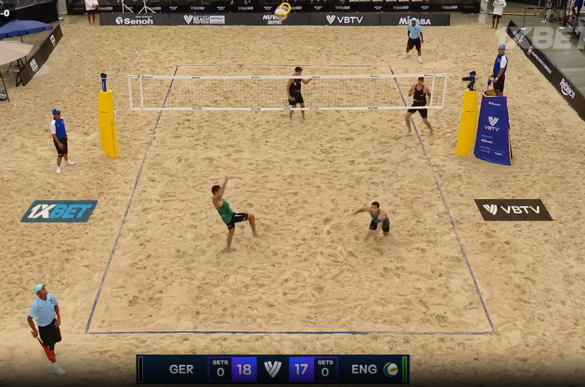
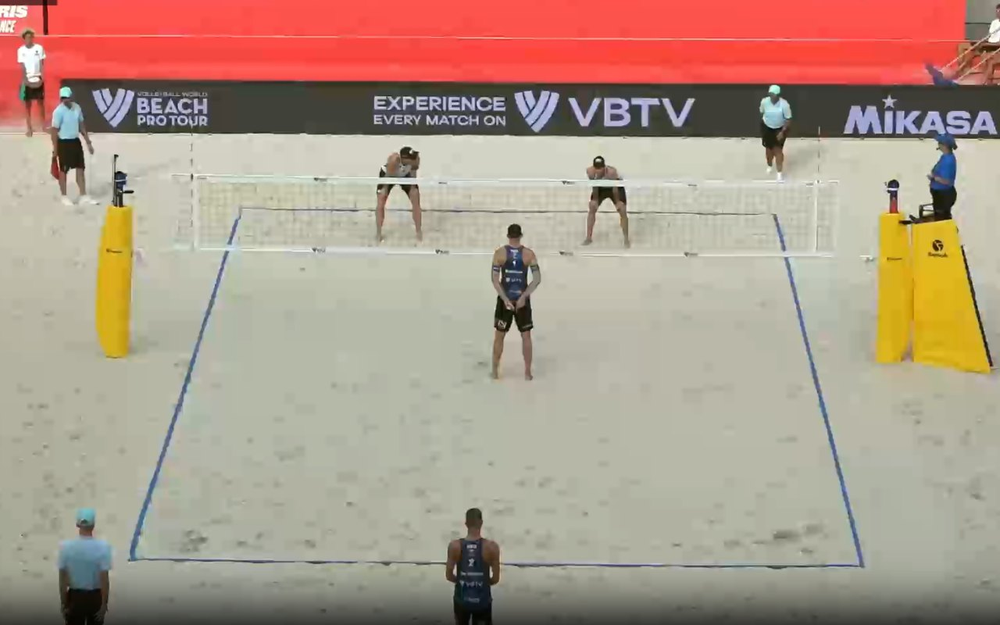
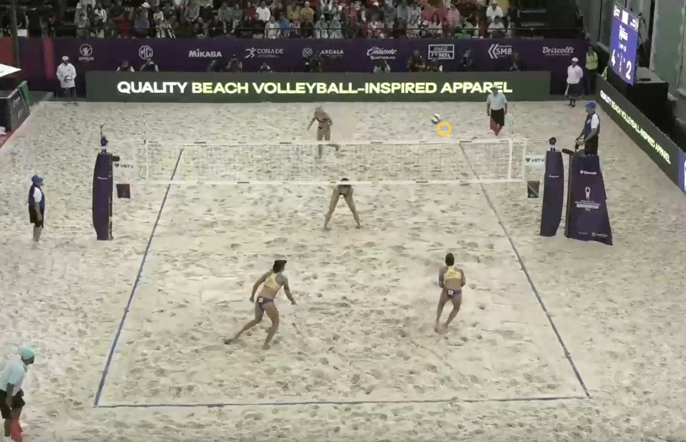
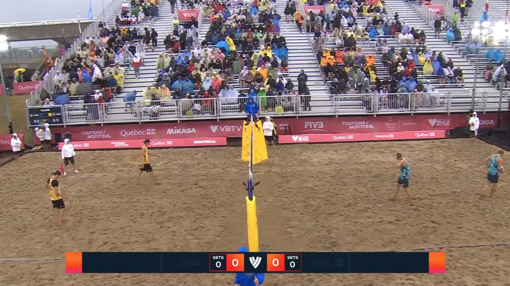
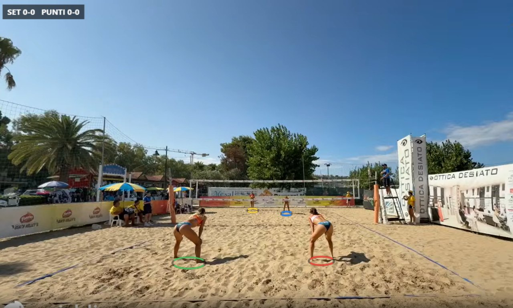
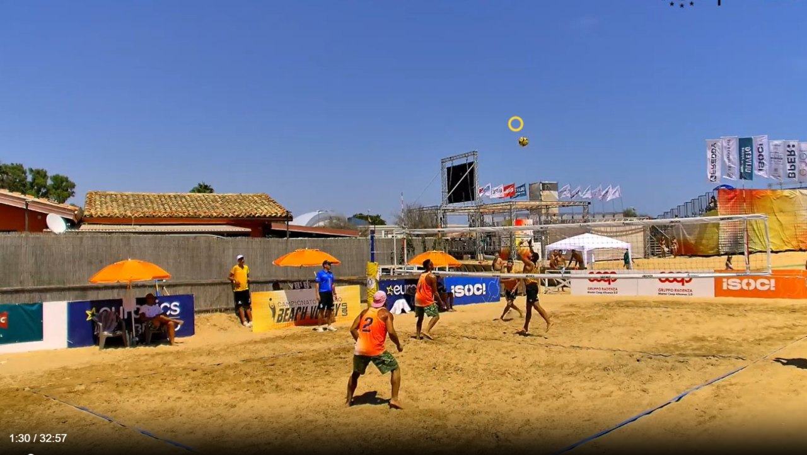
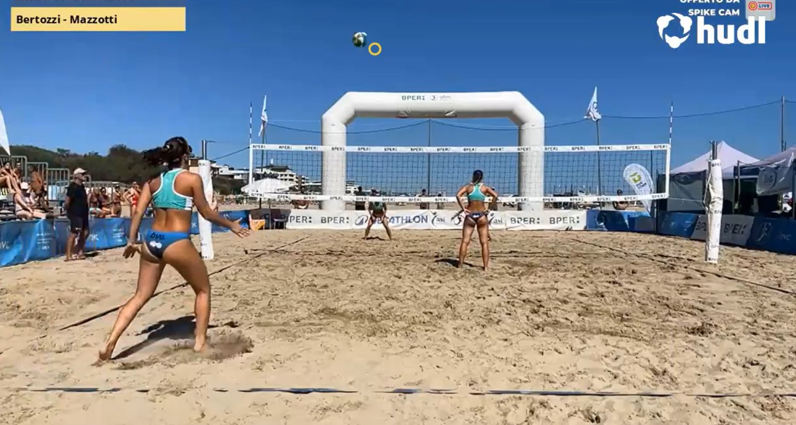
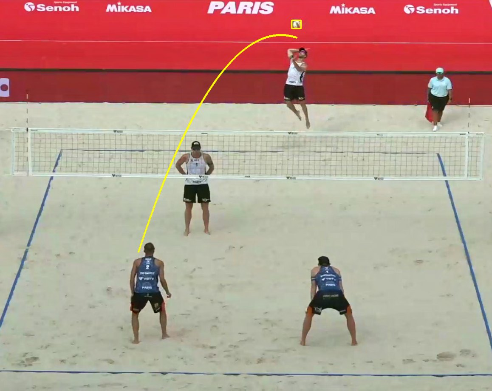

<!DOCTYPE html>
<html lang="it">
<head>
  <meta charset="UTF-8">
  <meta name="viewport" content="width=device-width, initial-scale=1.0">
  <title>Atto 5 — Cambiare punto di vista</title>
  <link rel="preconnect" href="https://fonts.googleapis.com">
  <link rel="preconnect" href="https://fonts.gstatic.com" crossorigin>
  <link href="https://fonts.googleapis.com/css2?family=Montserrat:wght@600;700;800;900&family=Inter:wght@400;500;600;700&display=swap" rel="stylesheet">
  <script src="https://unpkg.com/react@18.3.1/umd/react.production.min.js"></script>
  <script src="https://unpkg.com/react-dom@18.3.1/umd/react-dom.production.min.js"></script>
  <script src="https://unpkg.com/@babel/standalone@7.26.10/babel.min.js"></script>
  <script>Babel.registerPreset('classic', { presets: [[Babel.availablePresets.react, { runtime: 'classic' }]] });</script>
  <style>
    :root {
      --bg: #0e1728;
      --bg-card: #16233c;
      --bg-light: #1E2E52;
      --border: #2a3a5c;
      --text: #f3f5f9;
      --text-dim: #c9d2e0;
      --text-muted: #93a0b6;
      --coral: #EF5540;
      --sun: #F6A93B;
      --teal: #1FA9A0;
      --sand: #E7C58C;
      --navy: #1E2E52;
      --success: #1FA9A0;
      --danger: #EF5540;
      --warn: #F6A93B;
      --info: #4e93b8;
      --purple: #a879c4;
      --fs-xs: clamp(13px, 0.7vw + 11px, 14px);
      --fs-sm: clamp(15px, 0.8vw + 12px, 16px);
      --fs-body: clamp(17px, 1vw + 13px, 19px);
      --fs-lead: clamp(19px, 1.3vw + 14px, 22px);
      --fs-h3: clamp(20px, 1.6vw + 14px, 26px);
      --fs-h2: clamp(26px, 2.4vw + 16px, 36px);
      --fs-h1: clamp(34px, 5vw + 18px, 58px);
      --fs-display: clamp(44px, 7vw + 20px, 84px);
      --lh-body: 1.65;
      --lh-heading: 1.18;
    }
    * { margin: 0; padding: 0; box-sizing: border-box; }
    body { background: var(--bg); color: var(--text); font-family: 'Inter', sans-serif; }
    #root { min-height: 100vh; position: relative; }
    a { color: inherit; }
    h1 { font-family: 'Montserrat', sans-serif; line-height: var(--lh-heading); }
    h2, h3 { font-family: 'Montserrat', sans-serif; line-height: var(--lh-heading); font-weight: 700; }
    h2 { font-size: var(--fs-h2); }
    h3 { font-size: var(--fs-h3); }
    p, li { line-height: var(--lh-body); }
    button { font-family: 'Inter', sans-serif; }
    input[type="range"] { width: 100%; height: 32px; cursor: pointer; }
    .bg-texture {
      position: fixed; inset: 0; pointer-events: none; z-index: 0;
      opacity: 0.05;
      background-image: url("data:image/svg+xml,%3Csvg xmlns='http://www.w3.org/2000/svg' width='120' height='120'%3E%3Cfilter id='n'%3E%3CfeTurbulence type='fractalNoise' baseFrequency='0.9' numOctaves='2' stitchTiles='stitch'/%3E%3C/filter%3E%3Crect width='100%25' height='100%25' filter='url(%23n)'/%3E%3C/svg%3E");
    }
    .draw-surface { touch-action: none; }
    .app-shell { height: 100vh; height: 100dvh; display: flex; flex-direction: column; overflow: hidden; }
    .slide-scroll { -webkit-overflow-scrolling: touch; padding-bottom: 24px; }
    .slide-content-center { display: flex; flex-direction: column; justify-content: center; min-height: 100%; }
    .two-col-media { display: grid; grid-template-columns: 1fr 1fr; gap: 16px; }
    .angles-row { display: grid; gap: 10px; justify-content: center; }
    .angles-row-tesi { grid-template-columns: repeat(4, minmax(0, 1fr)); }
    .angles-row-now { grid-template-columns: repeat(3, minmax(0, 1fr)); }
    @media (max-width: 768px) {
      .slide-content { padding: 16px !important; }
      .top-bar { padding: 0 10px !important; }
      .top-bar span { font-size: var(--fs-xs) !important; }
      .top-bar > div:first-child { gap: 8px !important; }
      .bottom-bar { gap: 8px !important; padding: 0 10px !important; }
      .bottom-bar button, .bottom-bar a { padding: 10px 14px !important; font-size: var(--fs-xs) !important; min-height: 44px; }
      svg { max-width: 100%; height: auto; }
      .color-grid { grid-template-columns: repeat(3, 1fr) !important; }
      .rule-row { flex-wrap: wrap; }
      .camera-compare { grid-template-columns: 1fr !important; }
      .two-col-media { grid-template-columns: 1fr !important; }
      .angles-row-tesi, .angles-row-now { grid-template-columns: repeat(2, minmax(0, 1fr)) !important; }
    }
    @media (max-width: 480px) {
      .top-bar > div:first-child span:nth-child(4) { display: none; }
    }
  </style>
</head>
<body>
  <div id="root"></div>
  <script type="text/babel" data-presets="classic">
    const { useState, useEffect, useRef, useCallback } = React;

    const colors = {
      bg: '#0e1728', bgCard: '#16233c', bgLight: '#1E2E52',
      accent: '#4e93b8', accentAlt: '#8cb9d1', accentSolid: '#3e7693',
      text: '#f3f5f9', textDim: '#c9d2e0', textMuted: '#93a0b6',
      border: '#2a3a5c',
      coral: '#EF5540', sun: '#F6A93B', teal: '#1FA9A0', sand: '#E7C58C', navy: '#1E2E52',
      success: '#1FA9A0', danger: '#EF5540', warn: '#F6A93B', info: '#4e93b8', purple: '#a879c4'
    };
    // accentSolid è l'azzurro scurito di circa il 20%: bianco su accentSolid (#3e7693) dà un
    // contrasto verificato ≈4.98:1 (WCAG AA), contro il ≈3.4:1 di un testo bianco direttamente
    // sull'azzurro pieno (#4e93b8), insufficiente. Vedi CLAUDE.md, sezione contrasto.

    const ACT_LABEL = 'Atto 5';
    const ACT_TITLE = 'Cambiare punto di vista';
    const PREV_ACT_HREF = 'atto4-il-gioco-ha-le-sue-regole.html';
    const NEXT_ACT_HREF = 'atto6-tocca-a-voi.html';

    // Citazione della tesi di partenza (fonte per le figure in assets/tesi/).
    const THESIS_CITATION = "Fonte: A. Zammarchi, BallVisionAI: un'applicazione di Visione Artificiale per l'analisi automatizzata di partite di Beach Volley, tesi di laurea magistrale, Università di Bologna – Campus di Cesena, A.A. 2023-24";

    // Flag globale: true mentre un simulatore sta "catturando" tastiera/puntatore.
    let simActive = false;

    const Box = ({ type = 'info', title, children }) => {
      const cfg = {
        info: { c: colors.info, i: 'ℹ️' },
        warn: { c: colors.warn, i: '⚠️' },
        danger: { c: colors.danger, i: '🛑' },
        tip: { c: colors.purple, i: '💡' },
        success: { c: colors.success, i: '✓' }
      };
      const { c, i } = cfg[type];
      return (
        <div style={{ background: c + '15', border: `1px solid ${c}40`, borderLeft: `4px solid ${c}`, borderRadius: '0 4px 4px 0', padding: '16px 20px', margin: '16px 0' }}>
          {title && <div style={{ display: 'flex', alignItems: 'center', gap: '8px', marginBottom: '8px', fontWeight: '700', color: c, fontSize: 'var(--fs-body)', fontFamily: "'Montserrat', sans-serif" }}>{i} {title}</div>}
          <div style={{ color: colors.textDim, lineHeight: 'var(--lh-body)', fontSize: 'var(--fs-body)' }}>{children}</div>
        </div>
      );
    };

    const Glow = ({ children, color = colors.accent, pad = '20px' }) => (
      <div style={{ position: 'relative', padding: '2px', borderRadius: '12px', background: `linear-gradient(135deg, ${color}40, transparent, ${color}20)` }}>
        <div style={{ background: colors.bgCard, borderRadius: '10px', padding: pad }}>{children}</div>
      </div>
    );

    const SolidButton = ({ onClick, disabled, children, bg = colors.accentSolid, style }) => (
      <button
        onClick={onClick}
        disabled={disabled}
        style={{
          padding: '12px 26px', minHeight: '48px', border: 'none', borderRadius: '6px',
          background: disabled ? colors.bgLight : bg,
          color: disabled ? colors.textMuted : '#ffffff',
          fontWeight: '700', fontSize: 'var(--fs-sm)', cursor: disabled ? 'not-allowed' : 'pointer',
          fontFamily: "'Montserrat', sans-serif", letterSpacing: '0.02em',
          transition: 'transform 0.15s, filter 0.15s',
          ...style
        }}
        onMouseEnter={e => { if (!disabled) e.currentTarget.style.transform = 'translateY(-2px)'; }}
        onMouseLeave={e => { e.currentTarget.style.transform = 'translateY(0)'; }}
      >{children}</button>
    );

    const GhostButton = ({ onClick, disabled, active, children }) => (
      <button
        onClick={onClick}
        disabled={disabled}
        style={{
          padding: '10px 18px', minHeight: '44px', borderRadius: '6px',
          border: `1px solid ${active ? colors.accent : colors.border}`,
          background: active ? colors.accent + '25' : colors.bgLight,
          color: disabled ? colors.textMuted : (active ? colors.accentAlt : colors.textDim),
          fontWeight: '600', fontSize: 'var(--fs-sm)', cursor: disabled ? 'not-allowed' : 'pointer'
        }}
      >{children}</button>
    );

    /* ============================================================
       FIT PARABOLICO — usato dai simulatori "La parabola si spezza"
       e "Trova il punto di rottura". Minimi quadrati per y = a·x² + b·x + c,
       risolti con la regola di Cramer su un sistema 3×3 (equazioni normali).
       ============================================================ */

    function fitParabola(pts) {
      const n = pts.length;
      let Sx = 0, Sx2 = 0, Sx3 = 0, Sx4 = 0, Sy = 0, Sxy = 0, Sx2y = 0;
      pts.forEach(p => {
        const x = p.x, y = p.y;
        Sx += x; Sx2 += x * x; Sx3 += x * x * x; Sx4 += x * x * x * x;
        Sy += y; Sxy += x * y; Sx2y += x * x * y;
      });
      const A = [[Sx4, Sx3, Sx2], [Sx3, Sx2, Sx], [Sx2, Sx, n]];
      const B = [Sx2y, Sxy, Sy];
      const det3 = m => m[0][0] * (m[1][1] * m[2][2] - m[1][2] * m[2][1]) - m[0][1] * (m[1][0] * m[2][2] - m[1][2] * m[2][0]) + m[0][2] * (m[1][0] * m[2][1] - m[1][1] * m[2][0]);
      const D = det3(A);
      if (Math.abs(D) < 1e-9) { const avg = Sy / n; return { a: 0, b: 0, c: avg }; }
      const repl = col => { const M = A.map(r => r.slice()); for (let i = 0; i < 3; i++) M[i][col] = B[i]; return det3(M); };
      return { a: repl(0) / D, b: repl(1) / D, c: repl(2) / D };
    }
    const parabolaAt = (f, x) => f.a * x * x + f.b * x + f.c;
    const fitError = (f, pts) => pts.reduce((s, p) => s + Math.pow(parabolaAt(f, p.x) - p.y, 2), 0);
    function parabolaIntersectionX(f1, f2, xMin, xMax) {
      const A = f1.a - f2.a, B = f1.b - f2.b, C = f1.c - f2.c;
      const mid = (xMin + xMax) / 2;
      if (Math.abs(A) < 1e-9) return Math.abs(B) < 1e-9 ? null : -C / B;
      const disc = B * B - 4 * A * C;
      if (disc < 0) return null;
      const sq = Math.sqrt(disc);
      const x1 = (-B + sq) / (2 * A), x2 = (-B - sq) / (2 * A);
      const in1 = x1 >= xMin && x1 <= xMax, in2 = x2 >= xMin && x2 <= xMax;
      if (in1 && in2) return Math.abs(x1 - mid) < Math.abs(x2 - mid) ? x1 : x2;
      if (in1) return x1;
      if (in2) return x2;
      return Math.abs(x1 - mid) < Math.abs(x2 - mid) ? x1 : x2;
    }
    function pathFromFit(f, x0, x1, steps = 24) {
      let d = '';
      for (let i = 0; i <= steps; i++) {
        const x = x0 + (x1 - x0) * (i / steps);
        const y = parabolaAt(f, x);
        d += (i === 0 ? 'M' : 'L') + x.toFixed(1) + ',' + y.toFixed(1) + ' ';
      }
      return d;
    }

    /* ============================================================
       DATI REALI — assets/frames/manifest.json → rally (fotogramma
       "rally_bg.jpg", 1280×720, traccia della palla di uno scambio vero).
       Copiati come costanti: mai un fetch da file:// (CORS).
       ============================================================ */

    const RALLY_BALL = [ // manifest.json → rally.ball: [numero_fotogramma, x_norm, y_norm]
      [3,0.4093,0.7144],[6,0.413,0.699],[9,0.4183,0.6574],[12,0.4183,0.5768],[15,0.4219,0.5046],
      [18,0.4244,0.4699],[21,0.425,0.4574],[24,0.4276,0.4529],[27,0.4292,0.4648],[30,0.4505,0.4635],
      [33,0.4685,0.4657],[36,0.4789,0.4742],[39,0.488,0.4851],[42,0.4953,0.5],[45,0.5034,0.5236],
      [66,0.5015,0.5227],[69,0.496,0.5065],[72,0.4921,0.4972],[75,0.4867,0.4875],[78,0.4778,0.4819],
      [81,0.4713,0.4815],[84,0.4667,0.4843],[93,0.4404,0.5366],[105,0.4271,0.5704],[126,0.4292,0.6176],
      [150,0.4641,0.5361],[156,0.4453,0.5361],[162,0.4068,0.5902],[165,0.4,0.6042],[168,0.3807,0.6583],
      [171,0.375,0.6222],[174,0.3812,0.562],[177,0.3833,0.5463],[180,0.3921,0.4917],[183,0.3974,0.4615],
      [210,0.437,0.5444],[222,0.4396,0.5028],[243,0.4083,0.6444],[264,0.4573,0.5277],[267,0.4719,0.5338],
      [270,0.4948,0.5509],[273,0.5281,0.5824],[276,0.5284,0.5787],[282,0.5065,0.5246],[285,0.5,0.5185],
      [288,0.4961,0.5185],[291,0.4901,0.5222],[294,0.4854,0.5315],[300,0.4766,0.5606],[312,0.4662,0.5047],
      [363,0.3839,0.6745],[375,0.4057,0.6231],[384,0.4135,0.5185]
    ];
    const RALLY_TOUCHES = [15, 24, 48, 141, 156, 165, 177, 276, 309]; // manifest.json → rally.touches (in fotogrammi)
    const RALLY_DURATION = 387; // manifest.json → rally.duration_frames

    /* ============================================================
       SLIDE 3 — "La palla non mente": traccia reale, vista statica
       ============================================================ */

    function StaticTrajectory() {
      const poly = RALLY_BALL.map(p => `${(p[1] * 1280).toFixed(1)},${(p[2] * 720).toFixed(1)}`).join(' ');
      const touchPts = RALLY_TOUCHES.map(t => RALLY_BALL.reduce((best, p) => Math.abs(p[0] - t) < Math.abs(best[0] - t) ? p : best));
      return (
        <div style={{ textAlign: 'center' }}>
          <div style={{ position: 'relative', display: 'inline-block', lineHeight: 0, maxWidth: '100%', borderRadius: '8px', overflow: 'hidden', border: `1px solid ${colors.border}` }}>
            
            <svg viewBox="0 0 1280 720" style={{ position: 'absolute', inset: 0, width: '100%', height: '100%' }}>
              <polyline points={poly} fill="none" stroke={colors.sun} strokeWidth="3" opacity="0.9" />
              {RALLY_BALL.map((p, i) => <circle key={i} cx={p[1] * 1280} cy={p[2] * 720} r="3" fill={colors.sun} opacity="0.7" />)}
              {touchPts.map((p, i) => <circle key={'t' + i} cx={p[1] * 1280} cy={p[2] * 720} r="11" fill="none" stroke={colors.teal} strokeWidth="3" />)}
            </svg>
          </div>
          <p style={{ color: colors.textMuted, fontSize: 'var(--fs-xs)', marginTop: '6px' }}>
            <span style={{ color: colors.sun }}>●</span> posizione della palla, fotogramma per fotogramma &nbsp; <span style={{ color: colors.teal }}>◯</span> tocco (9 su questo scambio)
          </p>
        </div>
      );
    }

    /* ============================================================
       SIMULATORE — "La parabola si spezza"
       ============================================================ */

    // Traiettoria "vera": due archi parabolici uniti con uno spigolo (il tocco) all'indice 11.
    const BREAK_TRAJECTORY = [
      { x: 60.0, y: 260.0 }, { x: 90.91, y: 203.21 }, { x: 121.82, y: 156.48 }, { x: 152.73, y: 119.8 },
      { x: 183.64, y: 93.18 }, { x: 214.55, y: 76.62 }, { x: 245.45, y: 70.11 }, { x: 276.36, y: 73.66 },
      { x: 307.27, y: 87.26 }, { x: 338.18, y: 110.93 }, { x: 369.09, y: 144.65 }, { x: 400.0, y: 188.42 },
      { x: 436.0, y: 144.7 }, { x: 472.0, y: 112.06 }, { x: 508.0, y: 90.51 }, { x: 544.0, y: 80.04 },
      { x: 580.0, y: 80.66 }, { x: 616.0, y: 92.36 }, { x: 652.0, y: 115.14 }, { x: 688.0, y: 149.01 },
      { x: 724.0, y: 193.96 }, { x: 760.0, y: 250.0 }
    ];
    const BREAK_TRUE_INDEX = 11;
    const BREAK_HIDE_RADIUS = 2; // ±2 campioni nascosti = 5 fotogrammi

    function ParabolaBreakSimulator() {
      const [chosen, setChosen] = useState(null);
      const [hideBall, setHideBall] = useState(false);
      const [showTrue, setShowTrue] = useState(false);

      const isHidden = i => hideBall && Math.abs(i - BREAK_TRUE_INDEX) <= BREAK_HIDE_RADIUS;
      const visible = BREAK_TRAJECTORY.map((p, i) => ({ ...p, i })).filter(p => !isHidden(p.i));

      let leftFit = null, rightFit = null, meetX = null;
      if (hideBall || chosen != null) {
        const left = hideBall ? visible.filter(p => p.i < BREAK_TRUE_INDEX) : visible.filter(p => p.i <= chosen);
        const right = hideBall ? visible.filter(p => p.i > BREAK_TRUE_INDEX) : visible.filter(p => p.i >= chosen);
        if (left.length >= 3) leftFit = fitParabola(left);
        if (right.length >= 3) rightFit = fitParabola(right);
        if (leftFit && rightFit) meetX = parabolaIntersectionX(leftFit, rightFit, 60, 760);
      }

      const setBall = () => { setChosen(null); };

      return (
        <div>
          <p style={{ color: colors.textDim, fontSize: 'var(--fs-body)', marginBottom: '10px' }}>
            Clicca sul punto della traiettoria in cui pensi sia avvenuto il colpo.
          </p>
          <svg viewBox="0 0 820 320" style={{ width: '100%', maxHeight: '36dvh', background: colors.bg, borderRadius: '8px', border: `1px solid ${colors.border}` }}>
            <line x1="40" y1="290" x2="800" y2="290" stroke={colors.border} strokeWidth="2" />
            {leftFit && <path d={pathFromFit(leftFit, 60, 760)} fill="none" stroke={colors.info} strokeWidth="2.5" strokeDasharray="7 5" opacity="0.85" />}
            {rightFit && <path d={pathFromFit(rightFit, 60, 760)} fill="none" stroke={colors.coral} strokeWidth="2.5" strokeDasharray="7 5" opacity="0.85" />}
            {meetX != null && (
              <line x1={meetX} y1="20" x2={meetX} y2="290" stroke={colors.sun} strokeWidth="2" strokeDasharray="3 3" />
            )}
            {showTrue && (
              <line x1={BREAK_TRAJECTORY[BREAK_TRUE_INDEX].x} y1="20" x2={BREAK_TRAJECTORY[BREAK_TRUE_INDEX].x} y2="290" stroke={colors.teal} strokeWidth="3" />
            )}
            {visible.map(p => (
              <circle key={p.i} cx={p.x} cy={p.y} r={chosen === p.i ? 9 : 5}
                fill={chosen === p.i ? colors.sun : colors.sand}
                stroke={colors.bg} strokeWidth="1" style={{ cursor: 'pointer' }}
                onClick={() => setChosen(p.i)} />
            ))}
          </svg>
          <div style={{ display: 'flex', gap: '18px', justifyContent: 'center', flexWrap: 'wrap', fontSize: 'var(--fs-xs)', color: colors.textMuted, margin: '8px 0' }}>
            <span><span style={{ color: colors.info }}>▬▬</span> parabola prima del colpo</span>
            <span><span style={{ color: colors.coral }}>▬▬</span> parabola dopo il colpo</span>
            {meetX != null && <span><span style={{ color: colors.sun }}>┊</span> punto di incontro stimato</span>}
          </div>
          <div style={{ display: 'flex', gap: '10px', justifyContent: 'center', flexWrap: 'wrap' }}>
            <GhostButton active={hideBall} onClick={() => { setHideBall(h => !h); setChosen(null); }}>Nascondi la palla per 5 fotogrammi al contatto</GhostButton>
            <GhostButton active={showTrue} onClick={() => setShowTrue(s => !s)}>{showTrue ? 'Nascondi' : 'Mostra'} il tocco vero</GhostButton>
            <GhostButton onClick={setBall}>Ricomincia</GhostButton>
          </div>
          {hideBall && (
            <Box type="tip" title="Anche se la palla sparisce...">
              I punti attorno al contatto non sono visibili (come quando la palla passa dietro un braccio). Eppure le due parabole, prolungate, si incontrano comunque vicino al tocco vero: <strong style={{ color: colors.text }}>la fisica ci dice dove è stata colpita anche senza vederla.</strong>
            </Box>
          )}
        </div>
      );
    }

    /* ============================================================
       SIMULATORE — "Il colore della palla" (ritagli reali)
       ============================================================ */

    // assets/crops/ball_0..2.jpg (palla vera) + fake_0..7.jpg (candidati falsi: cappellino
    // dell'arbitro, sabbia), mescolati.
    const COLOR_CANDIDATES = [
      { id: 0, file: 'assets/crops/fake_0.jpg', isBall: false, label: 'Cappellino' },
      { id: 1, file: 'assets/crops/ball_0.jpg', isBall: true, label: 'Palla' },
      { id: 2, file: 'assets/crops/fake_2.jpg', isBall: false, label: 'Sabbia' },
      { id: 3, file: 'assets/crops/fake_3.jpg', isBall: false, label: 'Sabbia' },
      { id: 4, file: 'assets/crops/ball_1.jpg', isBall: true, label: 'Palla' },
      { id: 5, file: 'assets/crops/fake_4.jpg', isBall: false, label: 'Sabbia' },
      { id: 6, file: 'assets/crops/fake_1.jpg', isBall: false, label: 'Cappellino' },
      { id: 7, file: 'assets/crops/ball_2.jpg', isBall: true, label: 'Palla' },
      { id: 8, file: 'assets/crops/fake_5.jpg', isBall: false, label: 'Sabbia' },
      { id: 9, file: 'assets/crops/fake_6.jpg', isBall: false, label: 'Sabbia' },
      { id: 10, file: 'assets/crops/fake_7.jpg', isBall: false, label: 'Sabbia' }
    ];

    function ColorFilterSimulator() {
      const [wrongFlash, setWrongFlash] = useState(null);
      const [filtered, setFiltered] = useState(false);

      const onPick = (cand) => {
        if (filtered) return;
        if (cand.isBall) {
          setFiltered(true);
        } else {
          setWrongFlash(cand.id);
          setTimeout(() => setWrongFlash(f => f === cand.id ? null : f), 500);
        }
      };
      const reset = () => { setFiltered(false); setWrongFlash(null); };
      const kept = COLOR_CANDIDATES.filter(c => c.isBall).length;

      return (
        <div>
          <p style={{ color: colors.textDim, fontSize: 'var(--fs-body)', marginBottom: '14px' }}>
            {filtered ? 'Il filtro sul colore ha scartato tutto ciò che non è la palla:' : 'Clicca il ritaglio che secondo te è la palla vera.'}
          </p>
          <div className="color-grid" style={{ display: 'grid', gridTemplateColumns: 'repeat(4, 1fr)', gap: '16px', maxWidth: '900px', margin: '0 auto' }}>
            {COLOR_CANDIDATES.map(c => {
              const isKept = filtered && c.isBall;
              const isDiscarded = filtered && !c.isBall;
              return (
                <div key={c.id} onClick={() => onPick(c)} style={{
                  position: 'relative', aspectRatio: '1', borderRadius: '8px', overflow: 'hidden', cursor: filtered ? 'default' : 'pointer',
                  border: wrongFlash === c.id ? `3px solid ${colors.danger}` : isKept ? `3px solid ${colors.teal}` : `2px solid ${colors.border}`,
                  opacity: isDiscarded ? 0.3 : 1, filter: isDiscarded ? 'grayscale(80%)' : 'none',
                  transition: 'opacity 0.3s, filter 0.3s', minHeight: '44px'
                }}>
                  
                  {isKept && <span style={{ position: 'absolute', top: '4px', right: '6px', fontSize: '16px' }}>✓</span>}
                  {isDiscarded && <span style={{ position: 'absolute', top: '4px', right: '6px', fontSize: '16px' }}>×</span>}
                  {filtered && (
                    <span style={{ position: 'absolute', bottom: '2px', left: '4px', right: '4px', fontSize: '10px', color: '#000', background: 'rgba(255,255,255,0.7)', borderRadius: '3px', padding: '1px 3px', textAlign: 'center' }}>{c.label}</span>
                  )}
                </div>
              );
            })}
          </div>
          <div style={{ display: 'flex', justifyContent: 'center', marginTop: '16px' }}>
            <GhostButton onClick={reset}>Ricomincia</GhostButton>
          </div>
          {filtered && (
            <Box type="success" title="Filtro applicato">
              Su 11 candidati, il filtro sul colore ne ha tenuti solo <strong style={{ color: colors.text }}>{kept}</strong>: la palla vera. Lo stesso principio, imparato all'inizio di ogni partita, elimina la grandissima parte delle "palle fantasma".
            </Box>
          )}
        </div>
      );
    }

    /* ============================================================
       ILLUSTRAZIONE — anello studente/maestro
       ============================================================ */

    function TeacherStudentRing() {
      const cx = 350, cy = 165, R = 110, NR = 48;
      const nodes = [
        { angle: -90, label: 'Modello' },
        { angle: 30, label: 'Etichette automatiche' },
        { angle: 150, label: 'Nuovo modello' }
      ];
      const pos = a => ({ x: cx + R * Math.cos(a * Math.PI / 180), y: cy + R * Math.sin(a * Math.PI / 180) });
      const arcs = [[0, 1], [1, 2], [2, 0]];
      const trimStart = (p0, ctrl, r) => {
        const ux = ctrl.x - p0.x, uy = ctrl.y - p0.y;
        const norm = Math.hypot(ux, uy) || 1;
        return { x: p0.x + (ux / norm) * r, y: p0.y + (uy / norm) * r };
      };
      const trimEnd = (ctrl, p1, r) => {
        const ux = p1.x - ctrl.x, uy = p1.y - ctrl.y;
        const norm = Math.hypot(ux, uy) || 1;
        return { x: p1.x - (ux / norm) * r, y: p1.y - (uy / norm) * r };
      };
      return (
        <svg viewBox="0 0 700 330" style={{ width: '100%', maxHeight: '34dvh', background: colors.bg, borderRadius: '8px', border: `1px solid ${colors.border}` }}>
          <defs>
            <marker id="arrow5" markerWidth="8" markerHeight="8" refX="6" refY="4" orient="auto">
              <path d="M0,0 L8,4 L0,8 Z" fill={colors.accent} />
            </marker>
          </defs>
          {arcs.map(([a, b], i) => {
            const p1 = pos(nodes[a].angle), p2 = pos(nodes[b].angle);
            const mx = (p1.x + p2.x) / 2, my = (p1.y + p2.y) / 2;
            const dx = mx - cx, dy = my - cy;
            const norm = Math.hypot(dx, dy) || 1;
            const ctrl = { x: mx + (dx / norm) * 42, y: my + (dy / norm) * 42 };
            const start = trimStart(p1, ctrl, NR);
            const end = trimEnd(ctrl, p2, NR);
            const isBroken = i === 2;
            return (
              <path key={i} d={`M${start.x},${start.y} Q${ctrl.x},${ctrl.y} ${end.x},${end.y}`}
                fill="none" stroke={isBroken ? colors.textMuted : colors.accent} strokeWidth="3"
                strokeDasharray={isBroken ? '9 7' : 'none'} markerEnd="url(#arrow5)" opacity={isBroken ? 0.55 : 1} />
            );
          })}
          {nodes.map((n, i) => {
            const p = pos(n.angle);
            return (
              <g key={i}>
                <circle cx={p.x} cy={p.y} r={NR} fill={colors.bgCard} stroke={colors.accent} strokeWidth="2" />
                <text x={p.x} y={p.y + 5} textAnchor="middle" fontSize="12" fontWeight="700" fill={colors.text} style={{ fontFamily: "'Montserrat', sans-serif" }}>
                  {n.label.split(' ').map((w, wi) => <tspan key={wi} x={p.x} dy={wi === 0 ? 0 : 14}>{w}</tspan>)}
                </text>
              </g>
            );
          })}
          <g transform={`translate(${(pos(nodes[2].angle).x + pos(nodes[0].angle).x) / 2 - 18}, ${(pos(nodes[2].angle).y + pos(nodes[0].angle).y) / 2 - 60})`}>
            <path d="M18,0 L26,20 L18,16 L22,40 L2,14 L12,17 Z" fill={colors.danger} />
          </g>
          <text x={(pos(nodes[2].angle).x + pos(nodes[0].angle).x) / 2 - 30} y={(pos(nodes[2].angle).y + pos(nodes[0].angle).y) / 2 - 30} textAnchor="end" fontSize="14" fontWeight="700" fill={colors.danger} style={{ fontFamily: "'Montserrat', sans-serif" }}>Etichettatura umana</text>
        </svg>
      );
    }

    /* ============================================================
       SIMULATORE — "Trova il punto di rottura" (V sintetica + reale)
       ============================================================ */

    const V_TRACE = [50.038, 48.58, 45.947, 45.117, 43.176, 41.895, 41.64, 39.983, 39.103, 38.772,
      38.451, 39.728, 41.595, 42.471, 44.093, 45.325, 46.107, 47.057, 47.909, 49.245]
      .map((y, t) => ({ t, y }));
    const V_TRUE_K = 10;
    const V_MIN_S = 2, V_MAX_S = V_TRACE.length - 3;

    const PAD_L = 50, PAD_R = 30, PAD_T = 30, PLOT_W = 680, PLOT_H = 200;
    const yVals = V_TRACE.map(p => p.y);
    const yMin = Math.min(...yVals), yMax = Math.max(...yVals);
    const chartX = t => PAD_L + t * (PLOT_W / (V_TRACE.length - 1));
    const chartY = y => PAD_T + (yMax - y) / (yMax - yMin) * PLOT_H;

    function VBreakSimulator() {
      const [s, setS] = useState(6);

      const left = V_TRACE.filter(p => p.t <= s);
      const right = V_TRACE.filter(p => p.t >= s);
      const leftFit = fitParabola(left.map(p => ({ x: p.t, y: p.y })));
      const rightFit = fitParabola(right.map(p => ({ x: p.t, y: p.y })));
      const err = fitError(leftFit, left.map(p => ({ x: p.t, y: p.y }))) + fitError(rightFit, right.map(p => ({ x: p.t, y: p.y })));

      const errors = [];
      for (let cand = V_MIN_S; cand <= V_MAX_S; cand++) {
        const l = V_TRACE.filter(p => p.t <= cand), r = V_TRACE.filter(p => p.t >= cand);
        const lf = fitParabola(l.map(p => ({ x: p.t, y: p.y }))), rf = fitParabola(r.map(p => ({ x: p.t, y: p.y })));
        errors.push({ s: cand, e: fitError(lf, l.map(p => ({ x: p.t, y: p.y }))) + fitError(rf, r.map(p => ({ x: p.t, y: p.y }))) });
      }
      const maxErr = Math.max(...errors.map(e => e.e));

      return (
        <div>
          <svg viewBox={`0 0 760 260`} style={{ width: '100%', maxHeight: '30dvh', background: colors.bg, borderRadius: '8px', border: `1px solid ${colors.border}` }}>
            {V_TRACE.map(p => (
              <circle key={p.t} cx={chartX(p.t)} cy={chartY(p.y)} r={p.t === V_TRUE_K ? 5 : 4}
                fill={p.t <= s ? colors.info : colors.coral} opacity={p.t === V_TRUE_K ? 1 : 0.85} />
            ))}
            <path d={pathFromFit(leftFit, chartX(0), chartX(s))} fill="none" stroke={colors.info} strokeWidth="2.5" />
            <path d={pathFromFit(rightFit, chartX(s), chartX(V_TRACE.length - 1))} fill="none" stroke={colors.coral} strokeWidth="2.5" />
            <line x1={chartX(s)} y1={PAD_T - 10} x2={chartX(s)} y2={PAD_T + PLOT_H + 10} stroke={colors.sun} strokeWidth="2" strokeDasharray="4 3" />
            <text x={chartX(s)} y={PAD_T - 14} textAnchor="middle" fontSize="11" fill={colors.sun}>divisione</text>
          </svg>

          <input type="range" min={V_MIN_S} max={V_MAX_S} step="1" value={s} onChange={e => setS(parseInt(e.target.value, 10))} style={{ marginTop: '10px' }} />
          <p style={{ textAlign: 'center', color: colors.textDim, fontSize: 'var(--fs-sm)' }}>Punto di divisione: fotogramma {s} — errore combinato delle due parabole adattate ai punti: <strong style={{ color: colors.text }}>{err.toFixed(2)}</strong></p>

          <svg viewBox="0 0 700 90" style={{ width: '100%', maxHeight: '14dvh', marginTop: '6px' }}>
            {errors.map((e, i) => {
              const bw = 700 / errors.length;
              const h = 70 * (e.e / maxErr);
              return <rect key={i} x={i * bw + 2} y={80 - h} width={bw - 4} height={h}
                fill={e.s === s ? colors.sun : (e.s === V_TRUE_K ? colors.teal + '80' : colors.bgLight)} />;
            })}
          </svg>
          <p style={{ textAlign: 'center', color: colors.textMuted, fontSize: 'var(--fs-xs)' }}>Errore per ogni possibile punto di divisione — cerca il minimo.</p>

          {s === V_TRUE_K && (
            <Box type="success" title="Hai trovato il punto di rottura">
              Qui l'errore è al minimo: è esattamente il fotogramma del tocco. Il punto in cui la traccia "non torna" era proprio l'informazione che cercavamo.
            </Box>
          )}
        </div>
      );
    }

    function RealRallyViewer() {
      const [frame, setFrame] = useState(0);
      const [playing, setPlaying] = useState(false);
      const rafRef = useRef(null);
      const lastRef = useRef(null);

      useEffect(() => {
        if (!playing) return;
        const tick = (now) => {
          if (lastRef.current == null) lastRef.current = now;
          const dt = (now - lastRef.current) / 1000;
          lastRef.current = now;
          setFrame(f => {
            const nf = f + dt * 80;
            if (nf >= RALLY_DURATION) { setPlaying(false); return RALLY_DURATION; }
            return nf;
          });
          rafRef.current = requestAnimationFrame(tick);
        };
        rafRef.current = requestAnimationFrame(tick);
        return () => { cancelAnimationFrame(rafRef.current); lastRef.current = null; };
      }, [playing]);

      const visible = RALLY_BALL.filter(p => p[0] <= frame);
      const touchesReached = RALLY_TOUCHES.filter(t => t <= frame);
      const poly = visible.map(p => `${(p[1] * 1280).toFixed(1)},${(p[2] * 720).toFixed(1)}`).join(' ');

      return (
        <div>
          <div style={{ position: 'relative', display: 'inline-block', lineHeight: 0, maxWidth: '100%', borderRadius: '8px', overflow: 'hidden', border: `1px solid ${colors.border}` }}>
            
            <svg viewBox="0 0 1280 720" style={{ position: 'absolute', inset: 0, width: '100%', height: '100%' }}>
              {poly && <polyline points={poly} fill="none" stroke={colors.sun} strokeWidth="3" opacity="0.9" />}
              {visible.map((p, i) => <circle key={i} cx={p[1] * 1280} cy={p[2] * 720} r="3" fill={colors.sun} opacity="0.7" />)}
              {touchesReached.map(t => RALLY_BALL.reduce((best, p) => Math.abs(p[0] - t) < Math.abs(best[0] - t) ? p : best)).map((p, i) => (
                <circle key={'t' + i} cx={p[1] * 1280} cy={p[2] * 720} r="10" fill="none" stroke={colors.teal} strokeWidth="3" />
              ))}
            </svg>
          </div>
          <input type="range" min="0" max={RALLY_DURATION} step="1" value={frame} onChange={e => { setPlaying(false); setFrame(parseFloat(e.target.value)); }} style={{ marginTop: '10px' }} />
          <div style={{ display: 'flex', justifyContent: 'space-between', alignItems: 'center', flexWrap: 'wrap', gap: '10px' }}>
            <span style={{ color: colors.textMuted, fontSize: 'var(--fs-sm)' }}>Fotogramma {Math.round(frame)} / {RALLY_DURATION} — tocchi raggiunti: {touchesReached.length} / {RALLY_TOUCHES.length}</span>
            <div style={{ display: 'flex', gap: '8px' }}>
              <GhostButton onClick={() => setPlaying(p => !p)}>{playing ? '⏸ Pausa' : '▶ Riproduci'}</GhostButton>
              <GhostButton onClick={() => { setPlaying(false); setFrame(0); }}>Ricomincia</GhostButton>
            </div>
          </div>
        </div>
      );
    }

    function BreakPointSlide() {
      const [showReal, setShowReal] = useState(true);
      return (
        <div>
          <div style={{ display: 'flex', justifyContent: 'center', marginBottom: '14px' }}>
            <GhostButton active={!showReal} onClick={() => setShowReal(r => !r)}>{showReal ? 'Prova con una traccia sintetica (a V)' : 'Torna alla traccia reale dello scambio'}</GhostButton>
          </div>
          {showReal ? (
            <div>
              <p style={{ color: colors.textDim, fontSize: 'var(--fs-body)', marginBottom: '10px' }}>Sposta il cursore lungo lo scambio reale: i cerchi vuoti sono i tocchi.</p>
              <RealRallyViewer />
            </div>
          ) : (
            <div>
              <p style={{ color: colors.textDim, fontSize: 'var(--fs-body)', marginBottom: '14px' }}>
                Sposta il cursore per scegliere dove "spezzare" la traccia in due parabole: il minimo dell'errore cade sul tocco vero.
              </p>
              <VBreakSimulator />
            </div>
          )}
        </div>
      );
    }

    /* ============================================================
       SLIDES
       ============================================================ */

    const slides = [
      // 1 - Titolo
      () => (
        <div style={{ textAlign: 'center', padding: '60px 30px', display: 'flex', flexDirection: 'column', alignItems: 'center', justifyContent: 'center', minHeight: '70vh' }}>
          <div style={{ fontSize: 'var(--fs-display)', marginBottom: '20px' }}>🔄</div>
          <div style={{ fontSize: 'var(--fs-xs)', color: colors.accent, textTransform: 'uppercase', letterSpacing: '3px', marginBottom: '16px', fontWeight: '700' }}>{ACT_LABEL}</div>
          <h1 style={{ fontSize: 'var(--fs-h1)', fontWeight: '700', background: `linear-gradient(135deg, ${colors.accent}, ${colors.accentAlt})`, WebkitBackgroundClip: 'text', WebkitTextFillColor: 'transparent', marginBottom: '16px' }}>{ACT_TITLE}</h1>
          <p style={{ fontSize: 'var(--fs-lead)', color: colors.textDim, maxWidth: '640px', lineHeight: 'var(--lh-body)' }}>
            Quando tutto dipende dall'anello debole, a volte conviene cambiare la catena: invece di leggere il gesto, abbiamo iniziato ad ascoltare la fisica.
          </p>
        </div>
      ),

      // 2 - Le riprese dei tornei e i nostri video (fusione partita B + generalizzazione)
      () => (
        <div style={{ padding: '14px 30px' }}>
          <h2 style={{ color: colors.accent, marginBottom: '8px', display: 'flex', alignItems: 'center', gap: '12px' }}>
            <span style={{ fontSize: '28px' }}>📹</span> Le riprese dei tornei e i nostri video
          </h2>
          <Glow pad="12px 16px">
            <p style={{ color: colors.textDim, fontSize: 'var(--fs-body)' }}>
              Il modello aveva imparato dalle riprese dei tornei: telecamera <strong style={{ color: colors.text }}>alta, tutto il campo</strong>. I nostri video sono un'altra cosa: <strong style={{ color: colors.text }}>bassi, a bordo campo</strong>. Sulla partita ripresa di lato il sistema basato sui gesti <strong style={{ color: colors.text }}>crolla</strong>: centinaia di tocchi inventati. Da qui l'estate di test.
            </p>
          </Glow>

          <div style={{ color: colors.textMuted, fontSize: 'var(--fs-xs)', fontWeight: '700', textTransform: 'uppercase', letterSpacing: '0.4px', margin: '10px 0 6px' }}>
            Le riprese su cui il modello aveva imparato: telecamera alta, tutto il campo
          </div>
          <div className="angles-row angles-row-tesi">
            <div style={{ background: colors.bgCard, border: `1px solid ${colors.border}`, borderRadius: '8px', padding: '6px' }}>
              
            </div>
            <div style={{ background: colors.bgCard, border: `1px solid ${colors.border}`, borderRadius: '8px', padding: '6px' }}>
              
            </div>
            <div style={{ background: colors.bgCard, border: `1px solid ${colors.border}`, borderRadius: '8px', padding: '6px' }}>
              
            </div>
            <div style={{ background: colors.bgCard, border: `1px solid ${colors.border}`, borderRadius: '8px', padding: '6px' }}>
              
            </div>
          </div>
          <div style={{ color: colors.textMuted, fontSize: 'var(--fs-xs)', marginTop: '6px', textAlign: 'center' }}>{THESIS_CITATION}</div>

          <div style={{ color: colors.textMuted, fontSize: 'var(--fs-xs)', fontWeight: '700', textTransform: 'uppercase', letterSpacing: '0.4px', margin: '10px 0 6px' }}>
            I nostri video: telecamera bassa, a bordo campo, di lato, dietro la linea di fondo
          </div>
          <div className="angles-row angles-row-now">
            <div style={{ background: colors.bgCard, border: `2px solid ${colors.accent}`, borderRadius: '8px', padding: '6px' }}>
              
            </div>
            <div style={{ background: colors.bgCard, border: `2px solid ${colors.accent}`, borderRadius: '8px', padding: '6px' }}>
              
            </div>
            <div style={{ background: colors.bgCard, border: `2px solid ${colors.accent}`, borderRadius: '8px', padding: '6px' }}>
              
            </div>
          </div>

          <Box type="tip" title="È overfitting">
            Aveva imparato come appare una schiacciata <strong style={{ color: colors.text }}>da quella telecamera</strong>, non cos'è davvero una schiacciata.
          </Box>
        </div>
      ),

      // 3 - La palla non mente (traccia reale statica)
      () => (
        <div style={{ padding: '30px' }}>
          <h2 style={{ color: colors.accent, marginBottom: '16px', display: 'flex', alignItems: 'center', gap: '12px' }}>
            <span style={{ fontSize: '28px' }}>📍</span> La palla non mente
          </h2>
          <div className="two-col-media" style={{ gridTemplateColumns: '2fr 1fr', alignItems: 'start' }}>
            <StaticTrajectory />
            <div style={{ textAlign: 'center' }}>
              
              <div style={{ color: colors.textDim, fontSize: 'var(--fs-sm)', marginTop: '8px' }}>La traiettoria della palla era già uno strumento della tesi</div>
              <div style={{ color: colors.textMuted, fontSize: 'var(--fs-xs)', marginTop: '4px' }}>{THESIS_CITATION}</div>
            </div>
          </div>
          <p style={{ color: colors.textDim, fontSize: 'var(--fs-body)', marginTop: '14px' }}>
            Una palla in volo segue una parabola: è la gravità, non l'angolazione della telecamera. <strong style={{ color: colors.text }}>Ogni tocco è un cambio di traiettoria.</strong>
          </p>
        </div>
      ),

      // 4 - Simulatore "La parabola si spezza"
      () => (
        <div style={{ padding: '30px' }}>
          <h2 style={{ color: colors.accent, marginBottom: '20px', display: 'flex', alignItems: 'center', gap: '12px' }}>
            <span style={{ fontSize: '28px' }}>🏐</span> Simulatore — La parabola si spezza
          </h2>
          <ParabolaBreakSimulator />
        </div>
      ),

      // 5 - Simulatore "Il colore della palla" (ritagli reali)
      () => (
        <div style={{ padding: '30px' }}>
          <h2 style={{ color: colors.accent, marginBottom: '16px', display: 'flex', alignItems: 'center', gap: '12px' }}>
            <span style={{ fontSize: '28px' }}>🎨</span> Simulatore — Il colore della palla
          </h2>
          <p style={{ color: colors.textDim, fontSize: 'var(--fs-body)', marginBottom: '16px' }}>
            <strong style={{ color: colors.text }}>La palla ha lo stesso colore per tutta la partita</strong>, i falsi (cappellini, sabbia) no.
          </p>
          <ColorFilterSimulator />
        </div>
      ),

      // 6 - Imparare da se stessi non basta (fusione tentativo fallito + anello)
      () => (
        <div style={{ padding: '30px' }}>
          <h2 style={{ color: colors.accent, marginBottom: '16px', display: 'flex', alignItems: 'center', gap: '12px' }}>
            <span style={{ fontSize: '28px' }}>🔁</span> Imparare da se stessi non basta
          </h2>
          <p style={{ color: colors.textDim, fontSize: 'var(--fs-body)' }}>
            Idea: usare le posizioni della palla trovate dal nostro sistema per <strong style={{ color: colors.text }}>addestrare</strong> un rilevatore migliore, senza lavoro umano in più. Tre tentativi: <strong style={{ color: colors.text }}>nessuno ha superato il sistema di partenza.</strong>
          </p>
          <TeacherStudentRing />
          <Box type="tip" title="Distillazione circolare">
            Le etichette automatiche ereditano gli stessi punti ciechi del maestro. <strong style={{ color: colors.text }}>Uno studente non può superare un maestro che gli insegna solo ciò che già sa.</strong> Serve qualcosa che spezzi il circolo: l'etichettatura umana.
          </Box>
        </div>
      ),

      // 7 - L'anomalia era il segnale (fusione racconto + simulatore, traccia reale di default)
      () => (
        <div style={{ padding: '30px' }}>
          <h2 style={{ color: colors.accent, marginBottom: '20px', display: 'flex', alignItems: 'center', gap: '12px' }}>
            <span style={{ fontSize: '28px' }}>🚩</span> L'anomalia era il segnale
          </h2>
          <Glow>
            <p style={{ color: colors.textDim, fontSize: 'var(--fs-body)' }}>
              Un allenatore segnala una schiacciata che il sistema non vede: bagher e schiacciata si erano uniti in un'unica traccia a <strong style={{ color: colors.text }}>V</strong>, scartata perché nessuna parabola ci passava — insieme al tocco.
            </p>
          </Glow>
          <BreakPointSlide />
        </div>
      ),

      // 8 - Regole di contesto
      () => (
        <div style={{ padding: '30px' }}>
          <h2 style={{ color: colors.accent, marginBottom: '20px', display: 'flex', alignItems: 'center', gap: '12px' }}>
            <span style={{ fontSize: '28px' }}>📏</span> Regole di contesto
          </h2>
          <p style={{ color: colors.textDim, fontSize: 'var(--fs-body)' }}>
            Dopo la battuta si è dentro lo scambio: una "battuta" nel mezzo è quasi sempre un bagher o una schiacciata, e il sistema la <strong style={{ color: colors.text }}>rinomina e la segna come da verificare.</strong>
          </p>
          <Box type="warn" title="Un limite che nessuna regola risolve">
            Il modello dei gesti su un'inquadratura nuova continua a sbagliare la classe. L'unica cura vera è <strong style={{ color: colors.text }}>insegnargli con esempi veri di quell'inquadratura.</strong>
          </Box>
        </div>
      ),

      // 9 - Chiusura
      () => (
        <div style={{ padding: '30px', textAlign: 'center' }}>
          <h2 style={{ color: colors.accent, marginBottom: '20px' }}>La fisica ci ha salvato, ma…</h2>
          <div style={{ display: 'flex', flexDirection: 'column', gap: '10px', textAlign: 'left', maxWidth: '720px', margin: '0 auto 18px' }}>
            {[
              'Un\'inquadratura mai vista fa crollare un sistema che ragiona per gesti: la fisica della palla no.',
              'Una parabola che si spezza individua il tocco anche quando la palla sparisce per un istante.',
              'Imparare dalle proprie etichette non basta: serve sempre un occhio umano che rompa il circolo.'
            ].map((l, i) => (
              <div key={i} style={{ display: 'flex', gap: '10px', background: colors.bgCard, border: `1px solid ${colors.border}`, borderRadius: '8px', padding: '12px 16px' }}>
                <span style={{ color: colors.accent }}>✓</span>
                <span style={{ color: colors.textDim, fontSize: 'var(--fs-sm)' }}>{l}</span>
              </div>
            ))}
          </div>
          <Glow>
            <p style={{ color: colors.text, fontSize: 'var(--fs-lead)' }}>
              La fisica ci ha salvato dall'angolazione mai vista. Ma il pezzo che manca resta lo stesso di sempre: esempi etichettati da un occhio umano.
            </p>
          </Glow>
          <Box type="tip" title="La lezione dell'atto">
            Quando tutto dipende dall'anello debole, conviene cambiare la catena. E ciò che scartiamo come rumore a volte è l'informazione più importante.
          </Box>
        </div>
      ),
    ];

    /* ============================================================
       APP
       ============================================================ */

    function App() {
      const total = slides.length;
      const initialSlide = (() => {
        const n = parseInt(new URLSearchParams(window.location.search).get('slide'), 10);
        return n >= 1 && n <= total ? n - 1 : 0;
      })();
      const [current, setCurrent] = useState(initialSlide);

      const next = useCallback(() => setCurrent(c => Math.min(c + 1, total - 1)), [total]);
      const prev = useCallback(() => setCurrent(c => Math.max(c - 1, 0)), []);

      useEffect(() => { document.title = `${ACT_LABEL} — ${ACT_TITLE}`; }, []);

      useEffect(() => {
        const handler = e => {
          if (simActive) return; // un simulatore sta usando la tastiera
          const evTarget = e.target;
          const evTag = evTarget && evTarget.tagName ? evTarget.tagName.toLowerCase() : '';
          const isFormField = evTag === 'input' || evTag === 'textarea' || evTag === 'select' || evTag === 'button'
            || (evTarget && evTarget.isContentEditable) || (evTarget && evTarget.getAttribute && evTarget.getAttribute('role') === 'slider');
          // Lascia campi, slider e bottoni utilizzabili da tastiera (Spazio attiva il bottone,
          // le frecce muovono lo slider); ESC torna sempre all'indice tranne quando un simulatore
          // sta davvero catturando la tastiera (simActive, controllato sopra).
          if (isFormField && e.key !== 'Escape') return;
          if (e.key === 'ArrowRight' || e.key === ' ') { e.preventDefault(); next(); }
          if (e.key === 'ArrowLeft') { e.preventDefault(); prev(); }
          if (e.key === 'Escape') window.location.href = 'index.html';
          if (e.key >= '1' && e.key <= '9') { const idx = parseInt(e.key) - 1; if (idx < total) setCurrent(idx); }
        };
        window.addEventListener('keydown', handler);
        return () => window.removeEventListener('keydown', handler);
      }, [next, prev, total]);

      const touchRef = useRef(null);
      useEffect(() => {
        const onStart = e => { touchRef.current = e.touches[0].clientX; };
        const onEnd = e => {
          if (touchRef.current == null || simActive) return;
          const dx = e.changedTouches[0].clientX - touchRef.current;
          if (Math.abs(dx) > 60) { dx < 0 ? next() : prev(); }
          touchRef.current = null;
        };
        window.addEventListener('touchstart', onStart, { passive: true });
        window.addEventListener('touchend', onEnd, { passive: true });
        return () => { window.removeEventListener('touchstart', onStart); window.removeEventListener('touchend', onEnd); };
      }, [next, prev]);

      return (
        <div className="app-shell" style={{ background: colors.bg, position: 'relative' }}>
          <div className="bg-texture"></div>
          <div className="top-bar" style={{ flex: '0 0 auto', height: '54px', background: colors.bgCard + 'e6', backdropFilter: 'blur(10px)', borderBottom: `1px solid ${colors.border}`, display: 'flex', alignItems: 'center', justifyContent: 'space-between', padding: '0 20px', position: 'relative', zIndex: 1 }}>
            <div style={{ display: 'flex', alignItems: 'center', gap: '12px' }}>
              <a href="index.html" style={{ color: colors.textMuted, textDecoration: 'none', fontSize: 'var(--fs-sm)' }}>← Indice</a>
              <span style={{ color: colors.border }}>|</span>
              <span style={{ color: colors.accent, fontWeight: '700', fontSize: 'var(--fs-xs)' }}>{ACT_LABEL}</span>
              <span style={{ color: colors.textDim, fontSize: 'var(--fs-sm)' }}>{ACT_TITLE}</span>
            </div>
            <div style={{ display: 'flex', alignItems: 'center', gap: '12px' }}>
              <span style={{ color: colors.textMuted, fontSize: 'var(--fs-sm)' }}>{current + 1} / {total}</span>
              <div style={{ width: '100px', height: '6px', background: colors.bgLight, borderRadius: '3px', overflow: 'hidden' }}>
                <div style={{ height: '100%', width: `${((current + 1) / total) * 100}%`, background: colors.accent, borderRadius: '3px', transition: 'width 0.3s' }} />
              </div>
            </div>
          </div>
          <div className="slide-scroll" style={{ flex: '1 1 auto', overflowY: 'auto', position: 'relative', zIndex: 1 }}>
            <div className="slide-content slide-content-center" style={{ maxWidth: '1200px', margin: '0 auto', padding: '0 24px' }}>
              {slides[current]()}
            </div>
          </div>
          <div className="bottom-bar" style={{ flex: '0 0 auto', minHeight: '64px', background: colors.bgCard + 'e6', backdropFilter: 'blur(10px)', borderTop: `1px solid ${colors.border}`, display: 'flex', alignItems: 'center', justifyContent: 'center', gap: '16px', flexWrap: 'wrap', padding: '8px 20px', position: 'relative', zIndex: 1 }}>
            {current === 0 && (
              <a href={PREV_ACT_HREF} style={{ padding: '10px 24px', minHeight: '44px', display: 'inline-flex', alignItems: 'center', background: colors.bgLight, border: `1px solid ${colors.border}`, borderRadius: '6px', color: colors.textDim, textDecoration: 'none', fontSize: 'var(--fs-sm)' }}>← atto precedente</a>
            )}
            <button onClick={prev} disabled={current === 0} style={{ padding: '10px 24px', minHeight: '44px', background: current === 0 ? colors.bgLight : colors.bgCard, border: `1px solid ${colors.border}`, borderRadius: '6px', color: current === 0 ? colors.textMuted : colors.text, cursor: current === 0 ? 'not-allowed' : 'pointer', fontSize: 'var(--fs-sm)' }}>← Indietro</button>
            <button onClick={next} disabled={current === total - 1} style={{ padding: '10px 24px', minHeight: '44px', background: current === total - 1 ? colors.bgLight : colors.accentSolid, border: 'none', borderRadius: '6px', color: current === total - 1 ? colors.textMuted : '#ffffff', cursor: current === total - 1 ? 'not-allowed' : 'pointer', fontSize: 'var(--fs-sm)', fontWeight: '700' }}>Avanti →</button>
            {current === total - 1 && (
              <a href={NEXT_ACT_HREF} style={{ padding: '10px 24px', minHeight: '44px', display: 'inline-flex', alignItems: 'center', background: colors.success, border: 'none', borderRadius: '6px', color: colors.bg, textDecoration: 'none', fontSize: 'var(--fs-sm)', fontWeight: '700' }}>Atto 6 →</a>
            )}
          </div>
        </div>
      );
    }

    ReactDOM.createRoot(document.getElementById('root')).render(<App />);
  </script>
</body>
</html>
